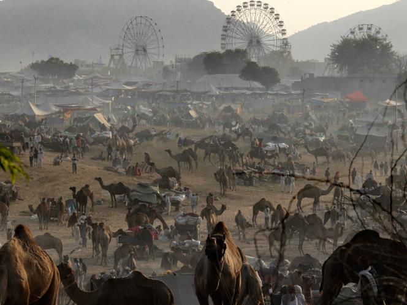
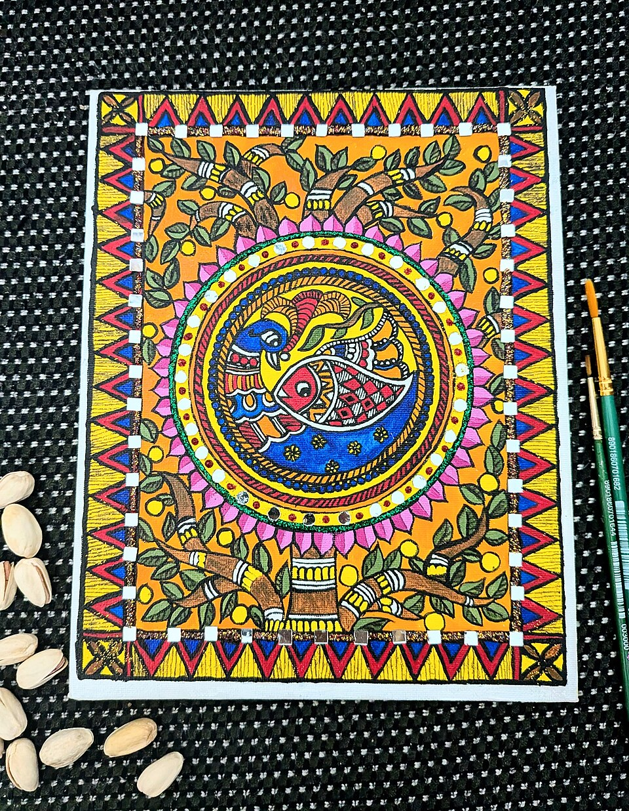

B. Fairs & Festivals in the Window (Jan 2025 – Jul 2026) BPSC FAVOURITE
| Event | Place / Venue | Window Date | One-line Hook |
|---|---|---|---|
| Sonepur Mela (Harihar Kshetra Mela) | Sonepur, Saran district — confluence of Ganga & Gandak | Nov–early Dec 2025 (begins around Kartik Purnima; exact 2025 dates vary across sources) | Asia's largest cattle fair; legend of Gajendra Moksha; elephant sale banned since 2004 (Wildlife Protection Act, 1972) |
| Pitru Paksha Mela | Vishnupad Temple, Gaya | Sep 2025 (~16 days; Pitru Paksha 7–21 Sep 2025, Sarva Pitru Amavasya 21 Sep — calendar-derived) | Pind daan for ancestors; Gaya = the pre-eminent tirtha for ancestral rites |
| Shravani Mela / Kanwar Yatra | Ajgaibinath Dham, Sultanganj (Bhagalpur) → Baidyanath Dham, Deoghar (~105 km) | Sawan: 11 Jul – 9 Aug 2025 | Kanwariyas carry Ganga jal from Sultanganj to Deoghar (Jharkhand) |
| Prakash Parv | Takht Sri Patna Sahib, Patna City | 358th: Jan 2025; 359th: ~5 Jan 2026 | Birth anniversary of Guru Gobind Singh (born 1666 at Patna Sahib); Takht Patna Sahib = one of the five Takhts of Sikhism |
| Buddha Purnima / Vesak | Mahabodhi Temple, Bodh Gaya | 12 May 2025; next 1 May 2026 | Vaishakh Purnima — Buddha's birth, enlightenment and mahaparinirvana |
| Bihar Diwas 2026 (114th) | Gandhi Maidan, Patna | 22 Mar 2026 | Theme 'Unnat Bihar, Ujjwal Bihar'; inaugurated by CM Nitish Kumar — his last Bihar Day as CM (moved to Rajya Sabha; Samrat Chaudhary CM from 15 Apr 2026) |
| Nalanda Literature Festival — 1st edition | Rajgir Convention Centre | 21–25 Dec 2025 | Inaugurated by Governor Arif Mohammad Khan; Shashi Tharoor, Sonal Mansingh, NU VC Sachin Chaturvedi attended |
| Bihar Museum Biennale 2025 — closing exhibition | Patna Museum complex | 'Patna Kalam: A Heritage', 17 Dec 2025 – 28 Feb 2026 | Opened by Art & Culture–Tourism Minister Arun Shankar Prasad; Bihar Museum DG = Anjani Kumar Singh; NU–Bihar Museum MoU (5 Sep 2025) for joint courses & manuscript digitisation |

Sonepur Cattle Fair (Harihar Kshetra Mela) at the Ganga–Gandak confluence, Saran — billed as Asia's largest cattle fair. (Image: Wikimedia Commons)
C. GI Tags & Cultural Economy STATE THE FACT CLEARLY
- THREE new Bihar GI tags in the window (granted January 2025): Bawan Buti Saree & Fabric (Nalanda), Patharkatti Stone Craft (Gaya) and Pidiya Painting (Bhojpur) — the last a Bhojpuri folk art. Mithila Makhana (2022) is no longer the latest; any option claiming "no new Bihar GI in 2025/2026" is a trap — mark it false.
- Bihar's GI-tagged products (learn the full list): Madhubani paintings, Bhagalpur silk, Sujini (Sujani) embroidery, Sikki grass craft, Khatwa appliqué, Shahi litchi (Muzaffarpur), Katarni rice, Jardalu mango (Bhagalpur), Magahi paan (Magadh region), Mithila Makhana (2022) — plus the Jan-2025 trio: Bawan Buti Saree & Fabric (Nalanda), Patharkatti Stone Craft (Gaya), Pidiya Painting (Bhojpur).
- Mithila Makhana in the news (Sep 2025): Union Commerce Minister Piyush Goyal inaugurated APEDA's first Bihar regional office at Patna on 11 Sep 2025 (Bihar Idea Festival) and flagged off a 7-MT trial consignment of GI-tagged Mithila Makhana to New Zealand, Canada and the USA.
- National Makhana Board: announced in Union Budget 2025 (1 Feb 2025); launched by PM Modi from Purnia on 15–16 Sep 2025; HQ at Purnea (Seemanchal). Bihar produces ≈ 85–90% of India's makhana (Madhubani, Darbhanga, Sitamarhi, Saharsa, Katihar, Purnea, Supaul, Kishanganj, Araria belts).

Madhubani (Mithila) painting — GI-tagged folk art of the Mithila region; the 70th BPSC asked its home district (Madhubani). (Image: Wikimedia Commons)
🧠 Mnemonic — Bihar GI List "Ma-Bha-Su-Si-Kha + Sha-Ka-Ja-Ma-Ma"
Crafts: Madhubani paintings, Bhagalpur silk, Sujini, Sikki grass, Khatwa appliqué. Agri/food: Shahi litchi, Katarni rice, Jardalu mango, Magahi paan, Makhana (Mithila, 2022 = latest). Remember: "5 crafts + 5 foods = Bihar GI" — and nothing new since 2022.
Crafts: Madhubani paintings, Bhagalpur silk, Sujini, Sikki grass, Khatwa appliqué. Agri/food: Shahi litchi, Katarni rice, Jardalu mango, Magahi paan, Makhana (Mithila, 2022 = latest). Remember: "5 crafts + 5 foods = Bihar GI" — and nothing new since 2022.
D. Heritage Corridors & UNESCO Sites HOT STATIC+CURRENT MIX
- UNESCO World Heritage Sites in Bihar = exactly TWO: Mahabodhi Temple Complex, Bodh Gaya (2002) and Nalanda Mahavihara / Archaeological Site of Nalanda (2016). Year-swap ("Mahabodhi 2016 / Nalanda 2002") is the classic trap.
- Temple corridors: the Union Budget of July 2024 announced Vishnupad Temple (Gaya) and Mahabodhi Temple (Bodh Gaya) corridors on the Kashi Vishwanath Corridor model, plus a Rajgir–Nalanda tourism push. (In-window construction milestones are not confirmed — don't invent them.)
- Buddhist circuit of Bihar: Bodh Gaya (Mahabodhi), Rajgir (Venuvana, Gridhrakuta), Nalanda (Mahavihara), Vaishali (relic stupa, Ashokan pillar), Kesaria (the tallest/largest stupa). Buddha Purnima = Vaishakh Purnima (12 May 2025; 1 May 2026).
- Nalanda University (Rajgir): new campus dedicated by PM Modi on 19 Jun 2024 (background); in-window highlights: first Nalanda Literature Festival (Dec 2025), new Master's programmes and global MoUs (2025), visit of Bhutan's PM on 3 Sep 2025; VC = Prof. Sachin Chaturvedi.

Mahabodhi Temple, Bodh Gaya — UNESCO World Heritage Site (2002); a corridor project on the Kashi Vishwanath model was announced in Budget 2024. (Image: Wikimedia Commons)